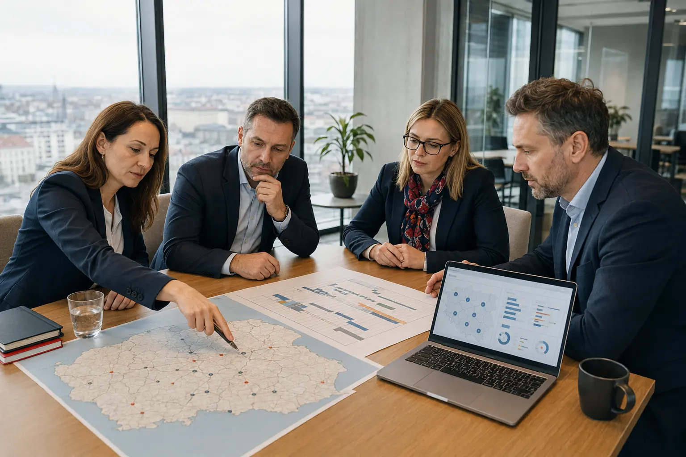

Production plants
Factories, processing, assembly and automotive plants.
We are looking for direct employers with real demand — in Poland and 36 European countries. We can search for candidates through our partners in Asia, Africa, the Americas and the Balkans.

Companies hiring people for their own plants, warehouses, hotels, restaurants, farms or their own construction sites.
Factories, processing, assembly and automotive plants.
Logistics centres, packing plants, transhipment companies.
Transport, courier and distribution companies looking for drivers cat. B, C and C+E.
Hotels, guesthouses, restaurants, tourist resorts — including seasonal ones.
Agricultural and horticultural farms, especially with seasonal work.
Construction companies and plants looking for welders, electricians and fitters.
Cleaning companies and facilities requiring permanent cleaning.
Care homes and facilities employing carers or nurses (including Germany).
Any company with real, confirmed demand for people.
The time depends on the employer, citizenship, document readiness, required permits, accreditations, the embassy and decisions of the authorities. Timelines known from earlier cases are checked afresh for each offer.
Rules of cooperation when referring employers.
Direct employers who hire people for their own plants, warehouses, hotels, restaurants, farms or their own construction sites. The most valuable contact is the owner, director, HR department or the person deciding on hiring.
No. These are areas of search, not a list of confirmed, ready orders. We verify each company and offer separately.
Financial terms and the agreement are set individually. What matters most at the start is finding a real employer who needs people and wants to discuss cooperation.
We source them through partners in, among others: India, Nepal, Bangladesh, Pakistan, Sri Lanka, Philippines, Vietnam, Uzbekistan, Tajikistan, Azerbaijan, and in other countries of Asia, Africa, the Americas and the Balkans. For the Philippines and Sri Lanka we additionally check the required accreditations.
We will check the demand and the feasibility in the given country, and then get back to you about the terms.